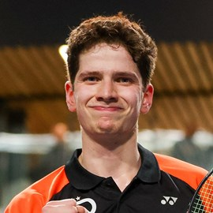
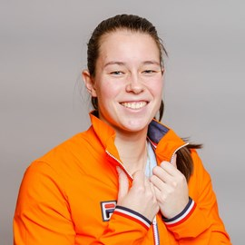
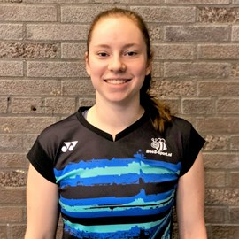
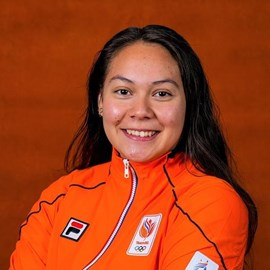
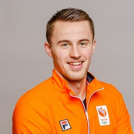
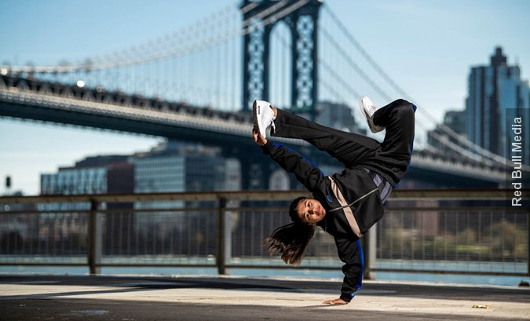
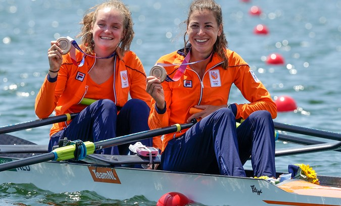
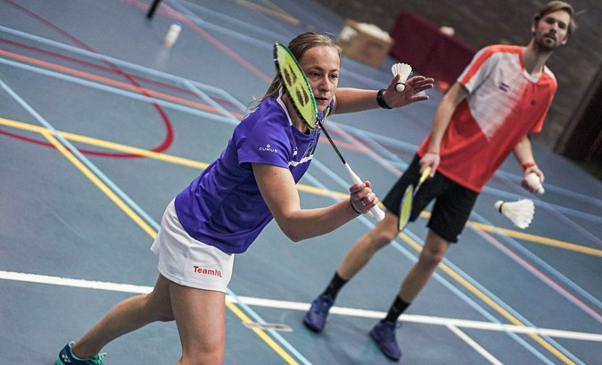

Badminton staat sinds Barcelona 1992 op het Olympische programma. Nederland won sindsdien één medaille bij deze sport. Mia Audina veroverde in Athene 2004 zilver in het enkelspel. In Rio 2016 vertegenwoordigden Selena Piek en Eefje Muskens TeamNL in het damesdubbelspel. Met Jacco Arends kwam Piek ook uit in het gemend dubbel. Helaas leidde het niet tot medailles.

Ties van der Lecq
23 jaar

Cheryl Seinen
28 jaar

Debora Jille
24 jaar

Jaymie Laurens
20 jaar

Mark Caljouw
28 jaar
+ Toon alle sporters
Badminton Nederland
Nieuws
Wie doen er namens TeamNL mee aan de Europese Spelen in Krakau?
#Krakow 2023
Redactie 06-06-2023 15:47
Van 21 juni tot en met 2 juli 2023 is Krakau in Polen het toneel van de derde editie van de Europese Spelen. De Poolse stad en de omliggende regio Małopolska zijn het toneel van 29 sporten. TeamNL staat in Polen onder leiding van chef de mission Mark Huizinga.

Selena Piek en Noël van 't End: Shuttles koppen en elkaar verwurgen?
#Sportswap
Redactie 03-05-2023 10:56
Badmintonkampioene Selena Piek daagt wereldkampioen judo Noël van 't End uit om van sport te ruilen. Dat belooft twee intensieve trainingen. En hoe harder Selena Noël laat zweten, hoe harder ze tijdens de judotraining in de lucht wordt gegooid. Gelukkig heeft ze van tevoren Google geraadpleegd.
Eet roeister Marieke Keijser liever poffertjes of shushi?
Redactie 30-07-2021 19:30
Wat zou bronzen roeister Marieke Keijser het liefst op haar bord krijgen, sushi of poffertjes? Ontdek het in de nieuwste aflevering van #OranjeBoven!

Hoe badmintonster Selena Piek een burn-out versloeg
#De kracht van
Redactie 12-02-2021 10:41
Een heftige blessure, daar begon het allemaal mee. Daarna kreeg badmintonster Selena Piek klap op klap op klap te verwerken. Ze verloor haar topsportstatus én haar sponsor stopte ermee, waardoor ze geen inkomen meer had. Binnen korte tijd leek Selena's wereld in elkaar te storten. En Selena zelf daardoor ook. Hoe kwam ze er weer bovenop?

Loting Olympisch badmintontoernooi verricht
#Tokyo 2020
Badminton Nederland 08-07-2021 20:04
Donderdag is in Engeland de loting verricht voor het badmintonevent op de Olympische Spelen in Tokio. Selena Piek, Cheryl Seinen, Mark Caljouw en Robin Tabeling vertegenwoordigen ons land op het grootste sportevenement ter wereld.
.jpg)
.jpg)